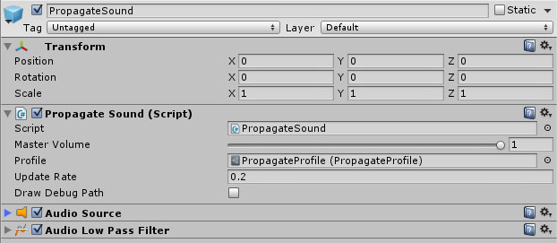
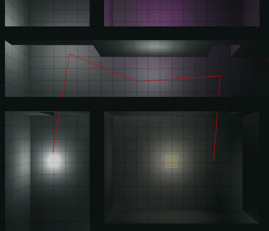

Propagate comes with a prefab to easily add audio sources to the scene. In the Propagate folder there is a sub-folder named 'prefabs' and inside that is prefab named 'PropagateSound'. Drag that into your scene and attach it to your target GameObject.
You may also add a
PropagateSoundcomponent to an existing AudioSource, however at runtime any object with aPropagateSoundcomponent will detach itself from it's parent and it's position will be driven by the component.
The prefab has three components attached; AudioSource, AudioLowPassFilter and PropagateSound.

The PropagateSound component has three properties; Profile, UpdateRate and DrawDebugPath.
The profile is an asset that contains many settings on how the audio's volume and frequency should change over distance, these settings are covered in page 4.
The update rate indicates how many times per second the propagating algorithm should update. The algorithm is smart and will only update when the scene changes, however it will never updater faster than is set for the update rate.
When draw debug path is checked and red path will be drawn in the scene at runtime to indicate how the audio is propagating to the listener.
